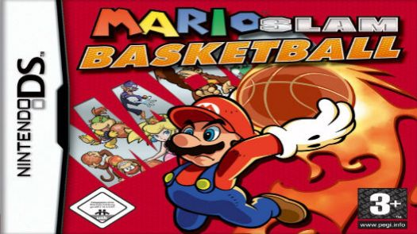

A História do Mario Basketball
imagem do jogo super Mario Basketball
Mario Hoops 3-on-3, conhecido na Europa como Mario Slam Basketball e no Japão como Mario Basket 3on3 (ののバケ 3on3, Mario Basuke 3on3), é um jogo esportivo desenvolvido pela Square Enix e publicado pela Nintendo para o Nintendo DS em 2006. O jogo é o primeiro em que os personagens de Mario e Final Fantasy aparecem juntos como personagens jogáveis, e o segundo jogo mario desenvolvido pela Square Enix, o primeiro sendo Super Mario RPG. É o primeiro jogo de basquete de Mario a ser lançado, embora personagens da série tenham aparecido na versão Nintendo GameCube da NBA Street V3. O jogo foi lançado no European Wii U Virtual Console em 26 de maio de 2016 e foi lançado no Console Virtual Wii U norte-americano em 3 de novembro de 2016.
O jogo apresenta uma série de três contra três torneios de basquete em quadras diferentes, cada um de três jogos. O jogo usa extensivamente a tela sensível ao toque do Nintendo DS e apresenta itens e moedas da série Mario. Os críticos elogiaram o jogo por ser divertido e divertido, mas criticaram a fraca IA e as opções multiplayer limitadas, com jogos de basquete completos sendo jogáveis apenas em dois jogadores localmente que cada um tinha uma cópia do jogo.
A jogabilidade de Mario Hoops 3-on-3 é centrada em jogos de basquete, estruturados em torneios que o jogador deve ganhar para progredir. A escada do torneio é feita com gráficos baseados no Super Mario Bros original. Cada torneio consiste em três jogos com duas metades de dois minutos e meio cada. A única exceção é um jogo extra com a equipe final fantasy no final do torneio final. O jogador pode ganhar um torneio vencendo os três jogos em sua escada. Após vencer, o jogador recebe uma taça de ouro, uma taça de prata ou uma taça de bronze. Essas taças correspondem a ganhar por mais de 200 pontos cumulativamente ao longo das três partidas, 100 pontos, ou simplesmente ganhar os três jogos.
As partidas apresentam três jogadores de cada lado, com personagens desenhados principalmente de Mario e outros jogos da Nintendo, bem como personagens da série Final Fantasy da Square Enix. Durante as partidas, o controle de toque do Nintendo DS é usado para todas as ações, exceto para o movimento, que pode ser manuseado pelo bloco direcional. O jogador também pode controlar diretamente através da tela de toque. A tela superior do DS mostra o jogo em 3D, enquanto a tela inferior mostra uma visão aérea de toda a quadra. [1] O drible é realizado automaticamente, mas mais lento se a tela de toque não for usada ativamente para driblar.
O jogador pode realizar vários movimentos, como roubar a bola e passar, usando gestos no touchpad. O jogador atira desenhando uma linha para a frente na tela de toque. Dependendo de onde o personagem está e como está se movendo, o tiro será um tiro normal, um tiro especial ou um slam dunk; esses tiros dão à equipe números diferentes de pontos. A quadra de basquete contém várias moedas, que dão ao jogador moedas quando dribladas em até um valor máximo; quando o jogador faz um arremesso, suas moedas são adicionadas à sua pontuação total. Alguns itens aparecem na quadra; quando usados eles concedem ao jogador movimentos especiais. [1]
Há dois modos de jogo: normal e duro. O modo rígido é desbloqueado depois que o jogo é batido no normal. Além do jogo regular do torneio, há um modo de exibição. Neste modo, o jogador pode personalizar as regras, como a quantidade de tempo de jogo, o número de períodos jogados e ligar ou desativar itens. Multiplayer é limitado a jogos locais, e cada jogador deve possuir sua própria cópia do jogo. [1] O jogo não tem multiplayer online, e a opção de "compartilhamento de jogos" (jogar multiplayer em apenas uma cópia do jogo) só permite o jogo de minijogos selecionados, não jogos completos de basquete. [1]